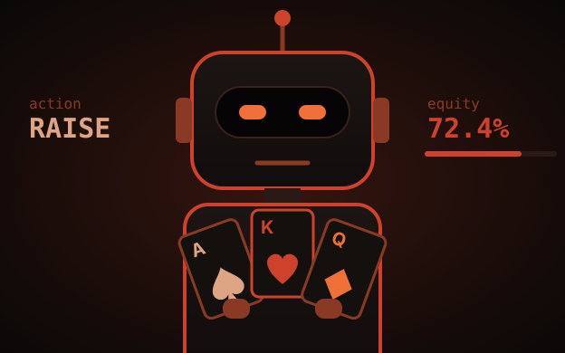
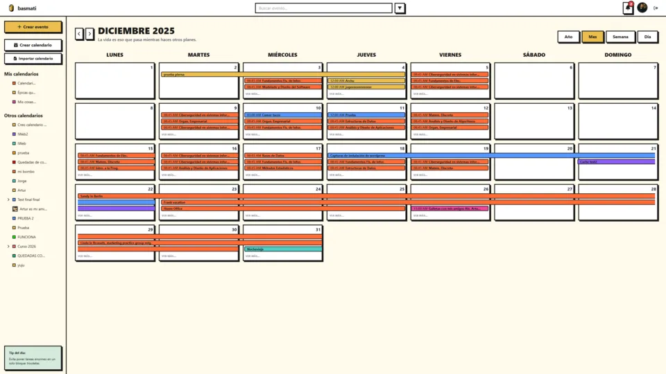

About
I'm a DevOps engineer working remotely from Spain, currently an Associate DevOps Engineer at Certinia. My work sits between development and operations: designing and monitoring secure AWS environments with Terraform, automating CI/CD with Jenkins, and building the automation that keeps a data-driven team shipping reliably.
I came to operations from the data side. At BHS Corrugated I built PostgreSQL-backed data workflows and pushed predictive models toward production through CI/CD and MLOps practices. In hackathons I usually take the infrastructure role: containers, reverse proxies, and cloud deployments on AWS and OCI. I'm at home in Linux and over SSH.
Rust is my language of choice for tooling and systems work, from a zero-dependency optimization framework to a computer-vision poker assistant. I hold a B.Eng. in Software Engineering from the University of Malaga, I'm studying an M.Sc. in Language Technologies at UNED, and I completed Coursera's Architecting Solutions on AWS.
Experience
-
Sept 2026 — Present
Associate DevOps Engineer · Certinia
Bridging development and operations in a data-driven team through cloud infrastructure and automation. Designing and monitoring secure AWS environments with Terraform, and streamlining deployment pipelines by automating CI/CD workflows with Jenkins.
-
Mar 2026 — Jun 2026
Data Analysis and Data Engineering · BHS Corrugated Spain
Extracted and structured industrial data from PostgreSQL with Python and pandas, designed and validated predictive features and models, and grew the role toward data engineering by strengthening reliable data preparation and CI/CD operational workflows.
-
Ongoing
DevOps role in hackathons
In team hackathons I own deployment and infrastructure: containerized services, Nginx reverse proxies, and cloud environments on AWS and OCI, wiring FastAPI backends to managed databases under tight deadlines. Results include Best Solution at Malackathon II and 4th place at Datathon Andalucía 2025.
Certifications
-
Jun 2026
Architecting Solutions on AWS · Coursera
Certification focused on AWS architecture, serverless systems, IAM, and event-driven design across enterprise and hybrid cloud scenarios.
Verify Credential
Education
-
2026 — 2027
M.Sc. in Language Technologies · UNED
In progress. Coursework: Neural Networks for Natural Language Processing, Text Mining, and Vector and Probabilistic Text Representation.
-
2022 — 2026
B.Eng. in Software Engineering · University of Malaga
Grade 7.88 / 10. Coursework: Algorithm Analysis and Design, Data Structures, Software Modeling, Design Patterns, and Backend and Cloud Computing. Final year project (roma) graded with Honors, 9.9 / 10.
Projects
-
roma
Final year project, graded with Honors (9.9 / 10). Zero-dependency metaheuristic optimization framework in Rust with single and multi-objective support, benchmarked for runtime performance against pagmo.
-

PokerHelper
Rust desktop assistant for Game Theory Optimal decision support in Texas Hold'em. Combines computer vision with game-state reconstruction to estimate strategically sound actions from the live table.
-
VMware vSphere ESXi Library
Bash CLI toolkit for provisioning, cloning, and destroying virtual machines on ESXi hosts, turning repetitive lab setup into scripted, repeatable operations.
-

basmati
Microservice calendar and events platform (React, FastAPI, MongoDB) packaged with Docker Compose behind Nginx, with GitHub Actions and a documented AWS EC2 deployment plus S3, Google Calendar, and Teamup integrations.
-
Brain
Malackathon II Best Solution. Built and deployed the FastAPI backend of a mental health data platform on Oracle Autonomous Database, plus the integration layer for an AI-assisted chat over clinical and statistical data.
-
Dr. Artificial
4th place, Datathon Andalucía 2025. Core backend for a chatbot-style medical assistant with RAG over patient data and persistent conversational memory.
-
WikiMovies
Java and Spring Boot backend project focused on data modeling and business logic with MySQL.
-
Monkey-Pop
React-based web game showing frontend delivery and product polish in a smaller scope.
-
MyLeetCode
Algorithmic practice in C with a low-level engineering mindset.